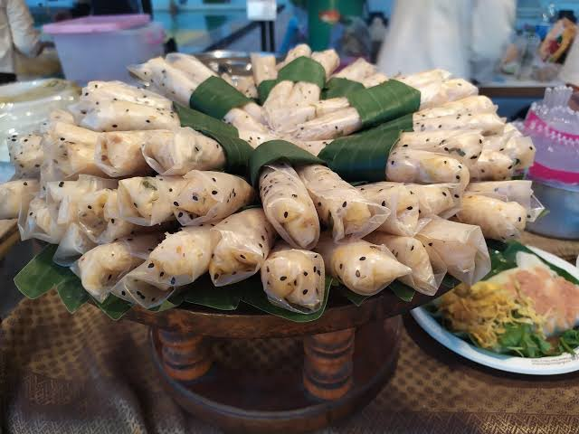

ป้อม ข้าวพันผัก
ข้าวพันเป็นอาหารพื้นบ้านที่ของชาวอำเภอลับแล ร้านอยู่ในตึกแถวไม่ใหญ่มาก มีโต๊ะนั่งจำกัดแต่มีเมนูเด็ดๆ เพียบ อาหารของที่ร้านเป็นแบบฟิวชั่น เมนูที่นิยมคือ ข้าวพันผักใส่ไข่ - แป้งใส่ไข่ใส่ไส้ด้วยผักอบด้วยไอน้ำ หรือจะลอง ไข่ม้วน - แป้งผสมไข่ พันเป็นแผ่นยาว กินเพลินกินกับน้ำจิ้มแจ่ว